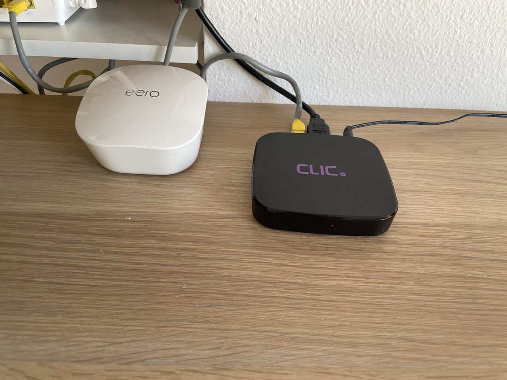
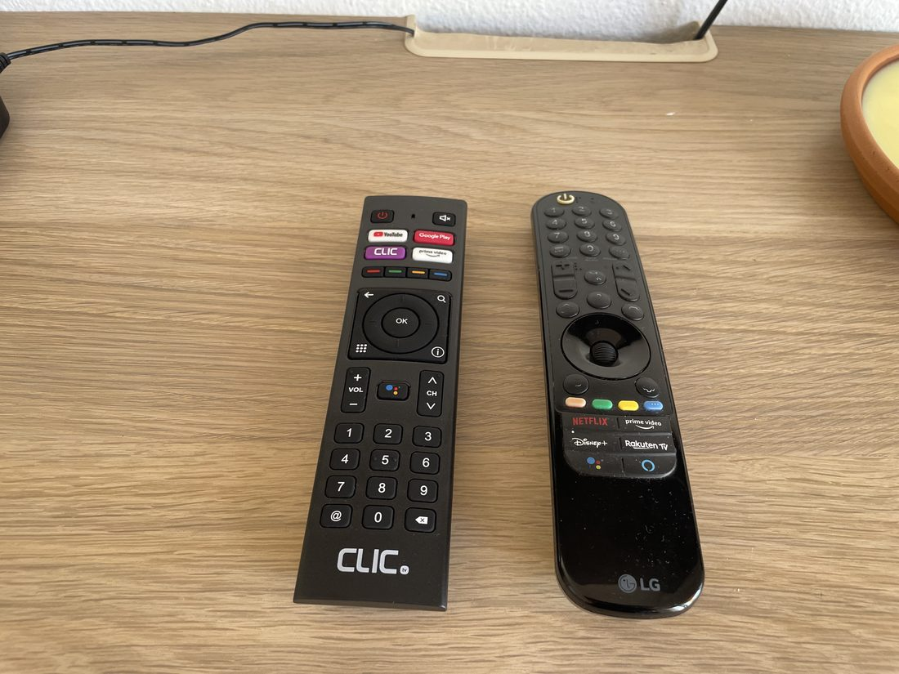
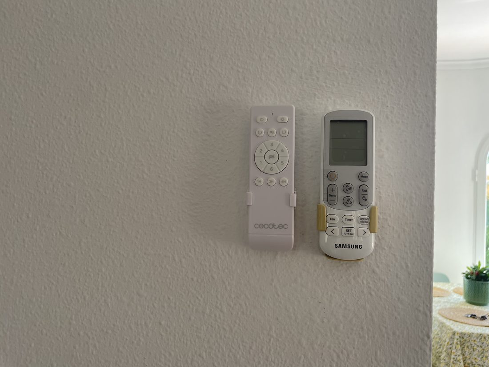
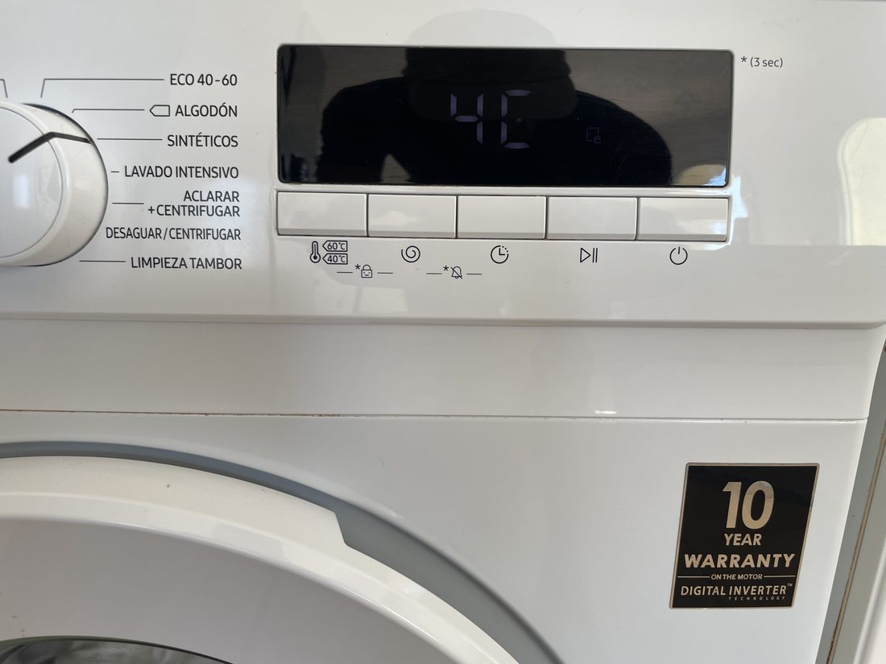
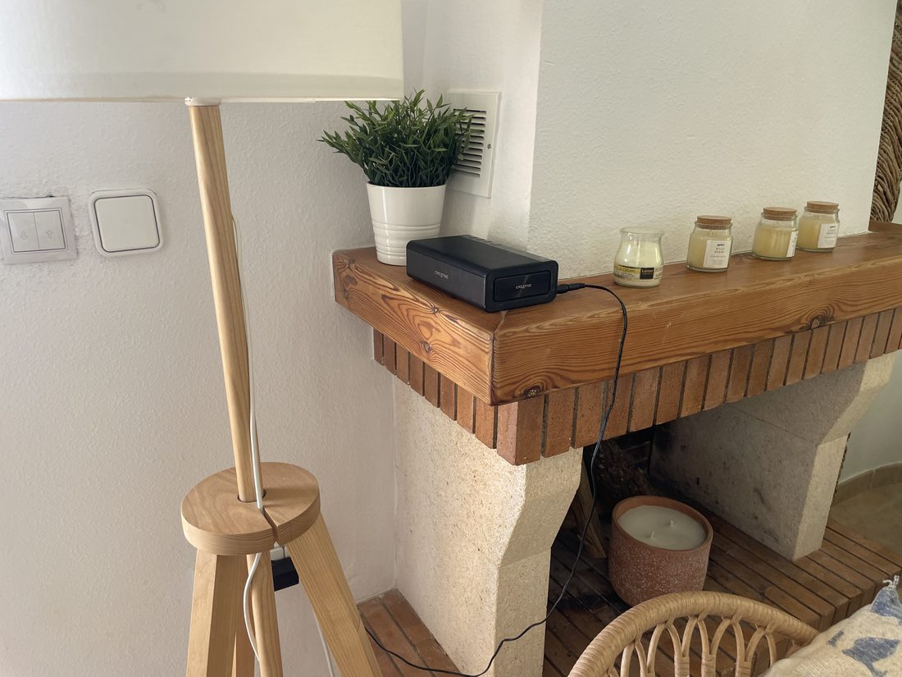
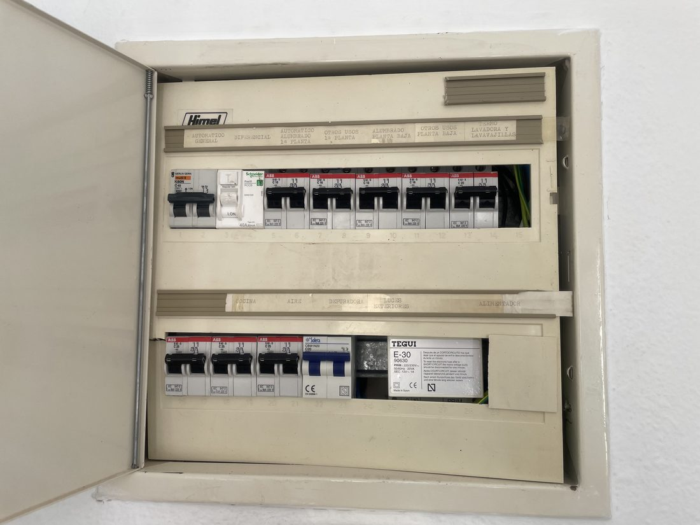

WiFi
- Red
- WifiCristina
- Contraseña
- Alteahome
Fibra de 1000 Mb con un router eero, que reparte la señal por toda la casa y la terraza. Puedes trabajar o ver series sin problema.

Televisores
Hay dos SmartTV LG, una de 70 pulgadas en el salón y otra de 65 en el dormitorio principal. Traen Netflix, Prime Video, Disney+ y el resto de aplicaciones, además de la televisión en directo a través de CLIC.

Ver Netflix o tus aplicaciones
- Enciende la tele con el botón de arriba del mando LG.
- El mando LG es un puntero: muévelo en el aire y aparecerá un cursor en la pantalla.
- Netflix, Prime Video, Disney+ y Rakuten tienen su propio botón en la parte baja del mando.
- Entra con tu cuenta y disfruta.
Ver la televisión en directo
Los canales van por CLIC, y hay dos formas de verlos. La más cómoda es abrir la aplicación de CLIC en la propia tele, sin tocar nada más ni cambiar de mando.
Aire acondicionado y ventiladores
Cada dormitorio y el salón tienen aire acondicionado Samsung, que enfría y calienta, y ventilador de techo Cecotec. Los mandos están colgados en su soporte de la pared, en cada estancia.

Aire acondicionado
- Cierra las ventanas y las puertas de la terraza de esa habitación.
- Enciende con el botón redondo de encendido, arriba a la izquierda del mando.
- Pulsa Mode hasta elegir frío (el copo de nieve) o calor (el sol).
- Ajusta con Temp + y Temp −. Entre 23 y 25 grados va perfecto: más bajo no enfría antes, solo gasta más.
- Con Fan cambias la potencia del ventilador, y con Fast enfría a tope durante un rato si acabas de llegar y la casa está caldeada.
El botón Timer sirve para que se apague solo pasadas unas horas: va muy bien para dormir sin tenerlo toda la noche.
Ventiladores de techo
Muchas noches de verano el ventilador solo es suficiente, y se duerme mejor que con el aire. En el mando, el botón de encendido está arriba a la izquierda y el de la luz arriba a la derecha. El círculo central elige la velocidad, del 1 al 6, y abajo tienes temporizadores de una, dos y cuatro horas.
Lavadora
Es una Samsung y está en la cocina. El detergente lo encontrarás al lado.
- Mete la ropa y cierra bien la puerta hasta oír el clic.
- Pon el detergente en el compartimento del cajón marcado con el II.
- Enciende con el botón de encendido, el último de la derecha.
- Gira la rueda hasta ECO 40-60. Es el programa que sirve para casi toda la ropa.
- Pulsa el botón de play. La puerta se bloquea mientras lava y se abre sola al terminar.

No es una avería. Pulsa el botón de play y el programa continúa con normalidad.
Para tender hay espacio en la zona de servicio. Te pedimos que no cuelgues ropa en la barandilla de la terraza.
Cocina
Está equipada con todo lo necesario: horno, vitrocerámica, lavavajillas, microondas y cafetera. La nevera es americana y tiene dispensador de hielo y de agua fría en la puerta.
Música
Junto a la chimenea hay un altavoz Bluetooth Creative. Enciéndelo, búscalo desde tu móvil en la lista de dispositivos Bluetooth y conéctate. Puedes llevártelo a la terraza o a la piscina; acuérdate de dejarlo cargando al volver.

Luz, agua y seguridad
Si se va la luz
Casi siempre es por consumo: han coincidido el aire acondicionado, la vitrocerámica y el horno a la vez, y salta la protección. Se soluciona en un momento.
- Apaga o desenchufa el aparato que estabas usando cuando se fue la luz.
- Abre el cuadro eléctrico y sube la palanca del diferencial, en la fila de arriba, a la izquierda.
- Si alguna otra palanca está bajada, súbela también. Cada una está etiquetada con la zona que alimenta.
- Vuelve a encender los aparatos de uno en uno, no todos a la vez.
- Si vuelve a saltar enseguida, no insistas y escríbenos.

Agua
Si ves una fuga, escríbenos y te decimos al momento qué llave hay que cerrar. No hace falta que arregles nada.
Detector de humos
Hay un detector de humos en el salón. Si empieza a pitar sin motivo, casi seguro es la pila: escríbenos y la cambiamos. En caso de incendio, salid de la casa y llamad al 112.